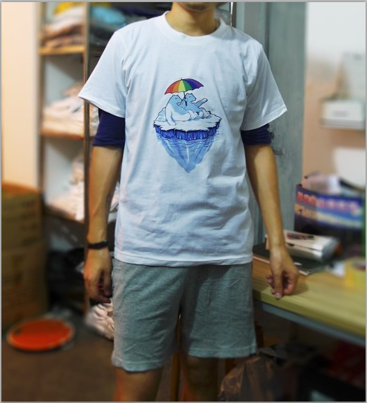
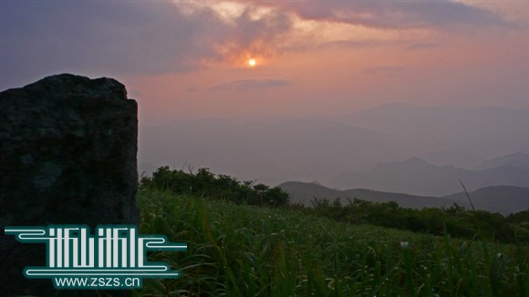
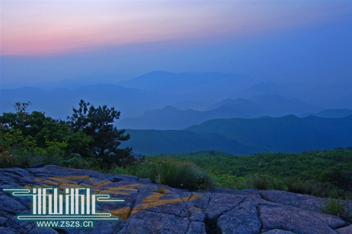
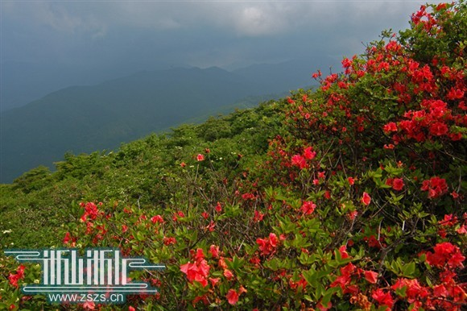
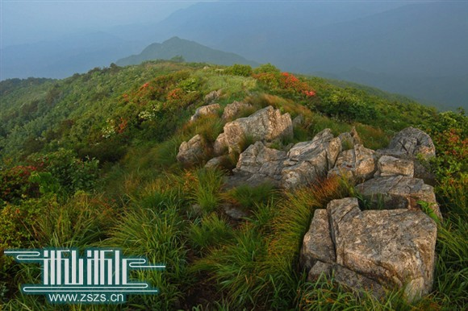

【版聚专题】☆识缘东天目，登高秋语时☆（10.19/20 东天目山）
集合地点：
黄龙体育中心东大门，见站衫为令。

活动流程：
周六
8:30~9:00 黄龙体育中心东大门集合，9点准时出发，过点不候
9:00~11:00 乘坐浙大校车前往目的地（临安市梅家村九州山庄）
11:00~11:30 休整安顿
11:30~12:30 中饭
12:30~13:00 休息
13:00~17:30 进入东天目景区游览
17:30~18:30 晚饭
18:30~19:30 晚间游戏
19:30~ 自由活动 休息
周日
8:30~9:00 早餐
9:00~9:30 乘车前往临安市区
9:30~11:30 坐公交返回杭州市区
报名方式：
1.点击本页右上角的“参加”，并给楼主发站内短消息告知手机号码以方便通知
2.跟帖注明具体信息，格式如下ID：XXXX
是否全程：是/否
是否带其他人：是/否 （带其他非论坛会员参加的，请注明人数）
住宿意愿：**** （不填写的，将由组织安排）
备注：**** （其他要说明的情况）
例如
ID：烟玉暖阳
是否带其他人：否
住宿意愿：跟之七住一块儿
备注：无
3.交付定金30元，转帐至支付宝帐号
hangzhoumotss@gmail.com
收款人号码请填写 136 7587 0921 (暖阳)

转帐时请注明论坛ID以及“参加版聚”。
4.以上三项都完成者，方视为报名成功。
5.按大巴座位数，最多可以报39人。先报先得！
费用说明：
1.全程收聚费用 230元/人，用于：包车（单趟）+餐饮（三顿）+住宿+东天目山景区门票。
2.收取定金之后，上车之后再收取每人200元。
3.多退少补，余款可以选择退回或者直接捐给酷儿论坛作为运营经费。
关于住宿：
1.安排住宿的是农家乐，标间，可住两人，一人一床。虽然会配有相应的一次性用品，不过还是建议自带卫浴用品。
2.住宿意愿可以报名信息中说明，想要同住一间的请事先商量好。（抓紧勾搭～～～～）对住宿意愿无说明的，将由组织上进行统一安排，并于17日晚间挂出住宿安排名单，对安排有意见的请及时向组织说明。
3.如果没有要求更改住宿的，19日晚上则按事前安排住宿。
注意事项：
1.报名请务必遵照报名方式中的描述，报名截止时间是2013-10-17 13:00。报名成功后本帖将列出名单。
2.本次活动因地点较远，交通比较麻烦，因此只开放全程报名，如无特殊情况不开放半程报名。
2.考虑到组织多人活动的困难（包括订车及预订房间），定金主要用于应对因会员临时不来导致资金损失的状况，请大家谅解。
3.活动欢迎空降！但组织方不保证能够为空降人员安排车辆和住宿。空降者将加收20元的费用。根据相关法律，会员预交定金后如果不来参加的（因不可抗力或意外事件导致的除外），定金一律不退回。如发生预交定金后组织方不能安排会员参加的，组织方双倍返还定金。

4.活动期间将有工作人员负责拍照纪录活动，活动后所公开照片若含清晰面部亦会争得本人同意再放出。其他参加活动的朋友请在征得对方同意后再拍摄带有其清晰面部的照片。

5.所有参加者都将获得一枚威望。（秒闪的不算）
6.活动最近安排变化请关注本帖及酷儿活动版。该活动最终解释权归酷儿论坛所有。
东天目山历史悠久，名扬中外。据《天目祖山志》载，梁天监七年(公元503年), 僧人宝志飞锡居之，来此开山，修庐结庵开拓佛事。梁大同年间（公元535年）， 兴建昭明禅寺。东天目山的兴起，当然是因昭明太子而来。梁武帝长子萧统，天监元年立为太子，因殡葬其母帝被宫廷太监鲍邈之诬陷后，十分气愤，不愿见梁 帝，出走宫廷游历名山大川。他跋山涉水来到临安东天目山修禅，并取秦汉六朝 文字撰写《文选》二十卷；分《金刚经》三十二节。据传，他用神过度，心血以 枯，双目俱瞽（内殴障）。禅师志公和尚导取两峰石池水洗之，双目复明（东西天目至今留有洗眼池），不数年，武帝遣人来迎太子回朝，兵马候于山麓而建寺， 俗称“等慈庵”，山岗建“昭明禅寺”，山下建有“昭明院”。元末被毁，清康 熙年间修复，规模宏大，僧人数百，香火旺盛，有诗赞：“八方香客云集来，十万烟火散江南”。近代享有盛誉的海灯法师也曾在此修炼过。但如此雄伟的禅寺， 毁于一场大火。现在，昭明院和昭明禅寺的大雄宝殿已修复。



